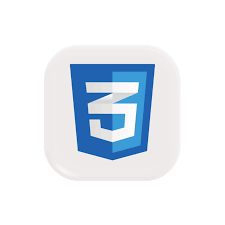

Backend & Lógica
- Python (Django / Flask)
- C++ (Estructuras de datos)
- SQL Databases
Me apasiona el mundo de la programación porque me permite transformar una idea lógica en una solución real que cualquiera puede usar. Mi formación en Ingeniería en Automática me dio la disciplina y la lógica, pero mi curiosidad me llevó a dominar Python y el desarrollo web. Disfruto creando interfaces limpias y sistemas funcionales.


Una muestra de mis capacidades técnicas.
Una web para un restaurante que permite gestionarse desde el panel de administracion
Una lista de tareas que permite agregar, editar y eliminar tareas con una interfaz de usuario amigable.
Sitio web estático desarrollado con HTML y CSS, con diseño moderno y que permite ver las noticias.
Página estática creada con HTML y CSS puro.
Calculadora de escritorio desarrollada con Tkinter. Proyecto en desarrollo con algunos fallos pendientes de corrección.
Como estudiante de Ingeniería en Automática, mi cerebro está entrenado para entender sistemas complejos, bucles de retroalimentación y eficiencia de hardware. Esa base en C++ me dio la disciplina necesaria para dominar la programación a bajo nivel.
Mi curiosidad me llevó al desarrollo de software, donde descubrí mi pasión por crear herramientas digitales. De forma autodidacta, he aprendido el ecosistema de Python y el diseño Frontend, permitiéndome construir soluciones que no solo funcionan con precisión matemática, sino que también son elegantes y fáciles de usar.